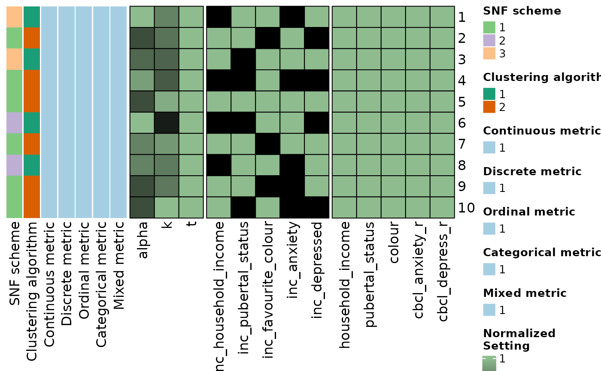

Create a heatmap where each row corresponds to a different set of hyperparameters in an SNF config object. Numeric parameters are scaled normalized and non-numeric parameters are added as heatmap annotations. Rows can be reordered to match prior meta clustering results.
Usage
config_heatmap(
sc,
order = NULL,
hide_fixed = FALSE,
show_column_names = TRUE,
show_row_names = TRUE,
rect_gp = grid::gpar(col = "black"),
colour_breaks = c(0, 1),
colours = c("black", "darkseagreen"),
column_split_vector = NULL,
row_split_vector = NULL,
column_split = NULL,
row_split = NULL,
column_title = NULL,
include_weights = TRUE,
include_settings = TRUE,
...
)Arguments
- sc
An
snf_configclass object.- order
Numeric vector indicating row ordering of SNF config.
- hide_fixed
Whether fixed parameters should be removed.
- show_column_names
Whether show column names.
- show_row_names
Whether show row names.
- rect_gp
Graphic parameters for drawing rectangles (for heatmap body). The value should be specified by
gparandfillparameter is ignored.- colour_breaks
Numeric vector of breaks for the legend.
- colours
Vector of colours to use for the heatmap. Should match the length of colour_breaks.
- column_split_vector
Vector of indices to split columns by.
- row_split_vector
Vector of indices to split rows by.
- column_split
Split on columns. For heatmap splitting, please refer to https://jokergoo.github.io/ComplexHeatmap-reference/book/a-single-heatmap.html#heatmap-split .
- row_split
Same as
split.- column_title
Title on the column.
- include_weights
If TRUE, includes feature weights of the weights matrix into the config heatmap.
- include_settings
If TRUE, includes columns from the settings data frame into the config heatmap.
- ...
Additional parameters passed to
ComplexHeatmap::Heatmap.
Value
Returns a heatmap (class "Heatmap" from package ComplexHeatmap) that displays the scaled values of the provided SNF config.
Examples
dl <- data_list(
list(income, "household_income", "demographics", "ordinal"),
list(pubertal, "pubertal_status", "demographics", "continuous"),
list(fav_colour, "favourite_colour", "demographics", "categorical"),
list(anxiety, "anxiety", "behaviour", "ordinal"),
list(depress, "depressed", "behaviour", "ordinal"),
uid = "unique_id"
)
#> ℹ 139 observations dropped due to incomplete data.
sc <- snf_config(
dl,
n_solutions = 10,
dropout_dist = "uniform"
)
#> ℹ No distance functions specified. Using defaults.
#> ℹ No clustering functions specified. Using defaults.
config_heatmap(sc)
